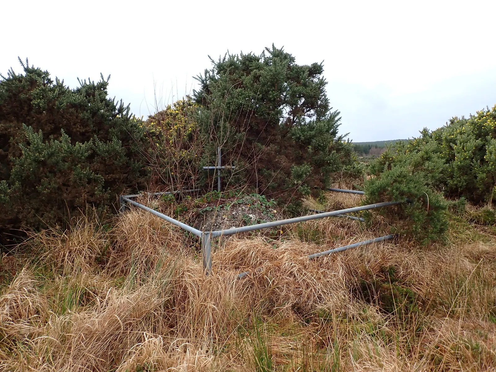
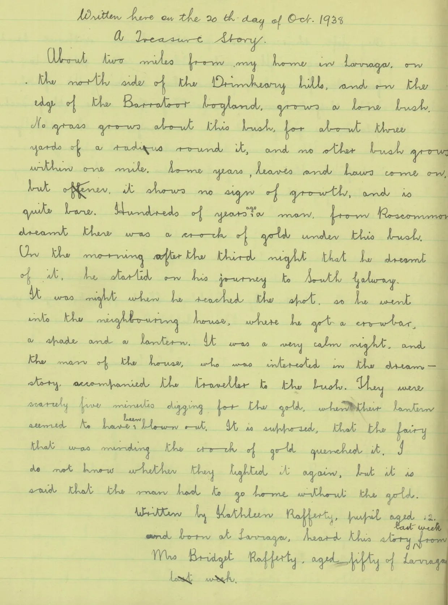

Larraga
Larraga in Irish “An Learga” meaning a hillside is 207.91 acres or 84.14 hectares in size and is in the Electoral division of Drumkeary.
In the 1841 census there were 97 people and 15 houses and in the 1851 census, after the famine, the population had fallen to 49 people and 8 houses.
In the past Larraga had a good few tradesmen, including carpenters, builders and stonemasons. One of the John Joes, the Raffertys, built the former garda station in Woodford, which was first built as a hotel. Another of his projects was the reconstruction of Thoor Ballylee for W.B. Yeats, and he also did the sewerage scheme for Gort town.

Larraga borders Allygola, Barratoor, Burroge and Drumkeary East.
A Treasure Story
The Schools’ Collection of 1938 has a story about a lone bush on the edge of the Barratoor bogland, written on 20th October 1938 by Kathleen Rafferty (aged 12) of Larraga, who heard it from Mrs Bridget Rafferty, aged fifty, of Larraga.

The transcription on dúchas.ie reads:
About two miles from my home in Larraga on the north side of the Drimkeary hills and on the edge of the Barratoor bog-land, grows a lone bush. No grass grows about this bush for about three yards of a radius around it, and no other bush grows within one mile. Some years, leaves and haws come on but oftener it shows no sign of growth, and is quite bare. Hundreds of years ago a man from Roscommon dreamt there was a crock of gold under this bush. On the morning after the third night that he dreamt of it he started on his journey to South Galway.
It was night when he reached the spot so he went into the neighbouring house, where he cot a crowbar, a spade and a lantern. It was a very calm night, and the man of the house who was interested in the dream story accompanied the traveller to the bush. They were nearly five minutes digging for the gold when their lantern seemed to have been blown out. It is supposed, that the fairy that was minding the crock of gold quenched it. I do not know whether they lighted it again, but it is said that the man had to go home without the gold.
Map
Placenames
| Name | Type | Notes |
|---|---|---|
| Ballinamona | sub-townland | |
| Mass Rock | mass rock | |
| Kirwan’s Garden | field | |
| Ballyfintan? | sub-townland | Somewhere around this location there was a group of houses Colie Larkin knew as Ballyfintan. The location may not be exact here. |
| Cúinín | field | |
| Begley’s | field |
Houses
| Name | Notes |
|---|---|
| Gardiner’s House | Jack and Winny Gardiner lived here. |
| Gardiner’s House | This house was never finished, it was started and the landlord stopped it because there wasn’t enough land for 2 families. He was a brother of Gardiner’s above. |
| Haugh’s House | |
| Murray’s House | Then Comer’s. |
| Gads Rafferty’s House | This family of Rafferty’s were known as “Gads” Rafferty, |
| Tommy Rafferty’s | |
| Begley’s House | |
| John Joe Rafferty’s House | This family of Rafferty’s were known as “the John Joe’s”. Michael Rafferty lived here. |
| Barrel Rafferty’s House | This family of Rafferty’s were known as “Barrel” Rafferty. |